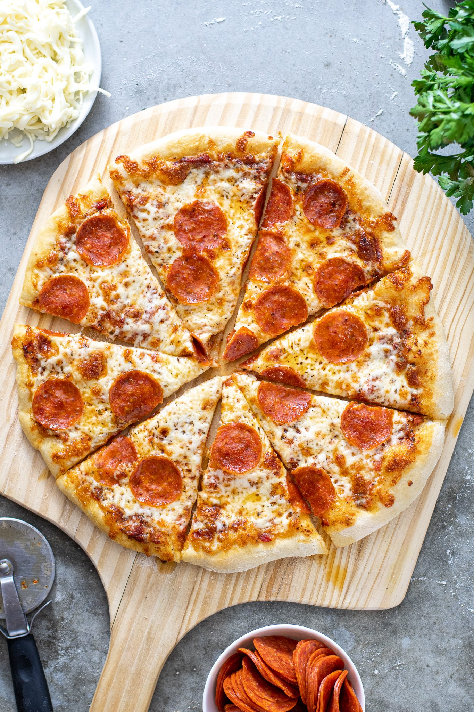

Homemade Pizza

Total time to make this delicious homemade pizza is 45 minutes If you're
looking for a homemade pizza crust recipe that's great for beginners,
you're in luck. This top-rated recipe is super easy to throw together on a
whim — and it puts the store-bought stuff to shame. Learn how to make the
best pizza crust of your life with just a few ingredients, find out how to
shape the dough, and get our best storage secrets.
Ingredients to make this homemade pizza:
- 1 cup warm water (110 degrees F/45 degrees C)
- 1 (.25 ounce) package active dry yeast
- 1 teaspoon white sugar
- 2 1/2 cups bread flour
- 2 tablespoons olive oil
- 1 teaspoon salt
Steps to make homemade pizza:
- Preheat oven to 450 degrees F (230 degrees C). Lightly grease a pizza pan.
- Gather all ingredients.
- Place warm water in a bowl; add yeast and sugar. Mix and let stand until creamy, about 10 minutes.
-
Add flour, oil, and salt to the yeast mixture; beat until smooth.
You can do this by hand or use a stand mixer fitted with a dough hook to make it easier.
Let rest for 5 minutes.
- Turn dough out onto a lightly floured surface and pat or roll into a 12-inch circle.
- Transfer to the prepared pizza pan.
- Spread crust with sauce and toppings of your choice.
-
Bake in the preheated oven until golden brown, 15 to 20 minutes.
Remove from the oven and let cool for 5 minutes before serving.